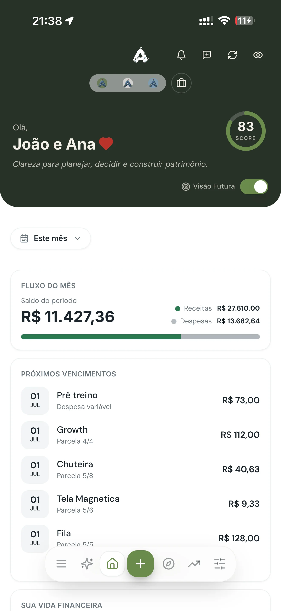

Fundo imobiliário virou o investimento preferido de quem sonha em "receber aluguel sem ter imóvel". A parte boa é que a ideia funciona mesmo: você compra uma cota na bolsa e passa a receber uma fatia dos resultados de shoppings, galpões, lajes corporativas ou títulos do setor. A parte que quase ninguém conta é que o valor da cota oscila, o rendimento pode cair e um fundo ruim continua ruim mesmo pagando bem no mês passado. Este guia é para você entender os dois lados antes de clicar em comprar.
Este texto faz parte do nosso guia de planejamento financeiro pessoal. Ele trata da etapa de fazer o dinheiro trabalhar — que vem depois de organizar o orçamento e montar a reserva, nunca antes.
O que é um fundo imobiliário
Um FII é um condomínio de investidores. Várias pessoas colocam dinheiro num mesmo fundo, um gestor profissional aplica esse dinheiro em imóveis ou em papéis ligados ao setor imobiliário, e os resultados são divididos entre os cotistas na proporção do que cada um tem.
Você compra e vende cotas pelo home broker da sua corretora, como faria com uma ação. A diferença prática em relação a comprar um imóvel de verdade é grande:
- Entrada baixa: em vez de precisar de centenas de milhares de reais, dá para comprar uma cota por dezenas ou poucas centenas.
- Sem burocracia de imóvel: nada de escritura, IPTU, reforma, inquilino que atrasa ou corretor.
- Liquidez: vender uma cota leva segundos; vender um apartamento pode levar meses.
- Diversificação: com pouco dinheiro você fica exposto a dezenas de imóveis diferentes, em vez de um só.
De onde vem o rendimento mensal
O fundo recebe aluguéis dos inquilinos dos imóveis que possui (ou juros dos títulos que carrega), paga suas despesas, e é obrigado por lei a distribuir a maior parte do lucro apurado aos cotistas — na prática, no mínimo 95% do lucro semestral apurado pelo regime de caixa. Por isso a maioria dos FIIs paga rendimento todo mês.
Esse rendimento é anunciado em reais por cota. Se um fundo paga R$0,90 por cota e você tem 100 cotas, recebe R$90 naquele mês. Simples assim. E, para pessoa física, os rendimentos de FIIs listados em bolsa são isentos de imposto de renda, desde que cumpridas as condições da lei — o fundo precisa ter ao menos 50 cotistas e você não pode deter 10% ou mais das cotas. Já o lucro na venda de cotas é tributado normalmente.
Cuidado com o dividend yield alto. Um fundo pagando muito acima da média quase sempre está avisando alguma coisa: contrato de aluguel perto do fim, inquilino em dificuldade, receita não recorrente que não vai se repetir. Rendimento alto não é prêmio — é preço de risco.
Os principais tipos de FII
Fundos de tijolo
Compram imóveis físicos e vivem do aluguel deles: galpões logísticos, shoppings, lajes corporativas, hospitais, agências bancárias. O rendimento tende a ser mais estável quando os contratos são longos, mas o fundo sofre quando um imóvel fica vago. A palavra que você vai ver o tempo todo é vacância — o percentual do imóvel que está sem inquilino.
Fundos de papel
Não têm imóvel nenhum. Investem em títulos de crédito imobiliário, os CRIs, e vivem dos juros que esses papéis pagam. Costumam render mais quando a inflação e os juros estão altos, e menos quando caem. O risco principal aqui não é vacância, é calote: o devedor do título parar de pagar.
Fundos de fundos (FOFs)
Compram cotas de outros FIIs. Servem para quem quer diversificação instantânea sem escolher fundo por fundo, com a desvantagem de pagar duas camadas de taxa de administração.
Fundos híbridos e de desenvolvimento
Os híbridos misturam tijolo e papel. Os de desenvolvimento compram terreno, constroem e vendem — potencial maior, risco maior e rendimento bem mais irregular. Não são o melhor lugar para começar.

O que olhar antes de comprar a primeira cota
Não existe fórmula mágica, mas existe um roteiro mínimo que evita a maioria dos erros de iniciante:
- Leia o relatório gerencial. Todo fundo publica um por mês, de graça, com vacância, contratos, inadimplência e o que o gestor está fazendo. É a fonte mais honesta que existe sobre o fundo.
- Veja o preço sobre valor patrimonial (P/VP). Ele compara quanto a cota custa com quanto o fundo vale nos livros. Muito acima de 1 significa pagar caro; muito abaixo pode indicar tanto oportunidade quanto problema — nunca compre só porque está barato.
- Cheque a liquidez. Fundos com pouquíssimo volume diário são difíceis de vender na hora que você precisar.
- Olhe a concentração. Um fundo com um único imóvel e um único inquilino é uma aposta, não um investimento diversificado.
- Compare o rendimento com o histórico dele mesmo, não com o do vizinho. Consistência vale mais que um mês espetacular.
Os riscos que você precisa aceitar
FII não é renda fixa e não tem garantia nenhuma. O preço da cota sobe e desce todo dia, e é normal ver seu investimento valendo menos do que você pagou — especialmente quando os juros sobem, porque investimentos mais seguros passam a competir com os FIIs. O rendimento também pode diminuir: se um inquilino sai, a distribuição cai junto.
Por isso a ordem importa. Antes de qualquer FII, você precisa da sua reserva de emergência completa em algo seguro e resgatável no mesmo dia. FII é dinheiro de prazo longo. Se você vai precisar dele em seis meses, ele não deveria estar ali.
Como começar sem se enrolar
Comece pequeno e com objetivo definido. Abra conta numa corretora, escolha dois ou três fundos de segmentos diferentes, aporte um valor que não faça falta e acompanhe por alguns meses antes de aumentar. O objetivo dos primeiros aportes não é ganhar dinheiro — é aprender a não entrar em pânico quando a cota cair.
Reinvestir os rendimentos nos primeiros anos é o que transforma um valor pequeno em algo relevante. É o mesmo raciocínio que discutimos em renda passiva: como começar do zero: no início, o rendimento serve para comprar mais cotas, não para pagar contas.
Se você ainda não sabe quanto sobra por mês para investir, esse é o passo anterior. Vale começar por onde começar a investir e só depois escolher fundos específicos.
Perguntas frequentes
O que são fundos imobiliários (FIIs)?
São fundos negociados na bolsa que reúnem dinheiro de vários investidores para aplicar em imóveis ou em títulos do setor imobiliário. Ao comprar uma cota, você tem direito a uma fatia dos resultados, distribuídos normalmente como rendimentos mensais.
Quanto preciso para começar a investir em FIIs?
Dá para começar com pouco, já que as cotas são compradas uma a uma e muitas custam entre dezenas e poucas centenas de reais. O valor mínimo não é o ponto crítico: o importante é já ter reserva de emergência e entender que o valor aplicado oscila.
Os rendimentos de FIIs são isentos de imposto de renda?
Os rendimentos mensais de FIIs listados em bolsa são isentos para pessoa física quando cumpridas as condições da lei (fundo com no mínimo 50 cotistas e investidor com menos de 10% das cotas). O lucro na venda de cotas é tributado, e as regras podem mudar — confirme a situação vigente antes de investir.
Enxergue todo o seu patrimônio num lugar só
O Atlas reúne contas, investimentos e metas para você decidir onde aportar com informação, não no escuro.
Testar 7 dias grátis, sem cartãoContinue lendo: Onde começar a investir · Renda passiva: como começar do zero · Guia de planejamento financeiro
Walter Espíndola
CEO da Zephyr Investimentos, com mais de 10 anos no mercado financeiro gerindo cerca de R$100 milhões em ativos. Criou o Atlas para levar clareza financeira a qualquer pessoa.